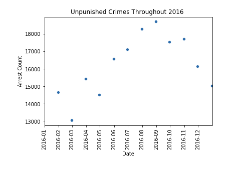
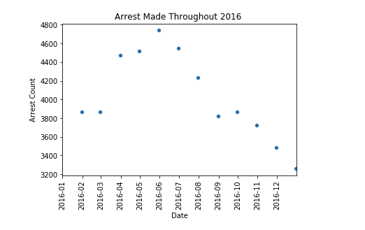
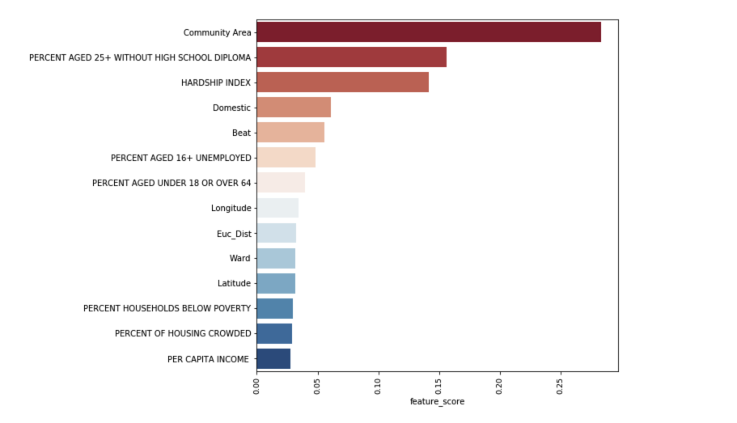

Project information
- Category: Machine Learning Classifier
- Project date: February, 2020
- GitHub: Predicting Arrest Using Machine Learning
Predicting Arrest in Chicago
Crime is a very concerning issue that affects many people around the world. What is even more concerning is the fact that most criminals will not be arrested for their crimes. I decided to see how crime affects my home city, so I did a brief analysis alongside making a predictive model using Machine Learning to predict arrest. There are 2.6million reported crimes in Chicago from 2016-2020. The sad part is only around 400K arrests were made on these reported crimes. I decided to see if I could make a predictive model using a machine learning algorithm that could predict if an arrest was made on reported crime. The category of Machine Learning I used was Supervised Classifier Algorithms because my target variable is a binary class. I am looking for a True or False outcome replying to the statement, Arrest made. I merged a couple of different datasets from the Chicago Data Portal, and I used Python’s Sci-Kit Learn library known for its Machine Learning Algorithms.
Before we get to the machine learning aspect we have to understand our Target Variable, Arrest. I used the Pandas group by function to group the total number of arrests every month. This way it is easier to visualize the patterns for criminal activity.


I did a Chicago Crime Analysis project that goes a lot deeper into this dataset. But for now, we just want to focus on the arrest. We can see that crime increase in the spring/summer significantly. We can also see the arrest made in the spring/ summer months also begin to drop.
Since I used a Classifier Algorithm I have to use metrics such as Accuracy, Recall, Precision, or F1. One problem I faced with this project was dealing with a heavy imbalance in the dataset. Only 20% of the reported crimes contained arrest. I address this problem a few different ways such as upsampling the minority class, downsampling the majority class and using ensemble methods. I also decided to use Recall as my main metric because I feel it is the most important metric to this particular question. Since we are predicting whether an arrest was made we want our predictions to be correct. Recall only takes into account the answers we got correct when calculating the score. This means that out of the total number of people that were arrested my model predicted correctly 64% of the time.
There were quite a few features that went into making my predictive model. I mainly used socioeconomic features and coordinate locations. The 3 most contributing features in my model are community area, percent Aged 25+ without a high school diploma, and hardship index. These are all socioeconomic features, and I was astonished to see that socioeconomics plays a massive role in predicting arrest. I feature engineered the Euclidean distance metric into my dataset. The Euclidean distance is measuring the distance of the scene of the crime from Madison st. And State st. I used these streets because Chicago is on a grid system, and the 0/0 coordinates are State and Madison. It was intriguing to find that an immense number of crimes took place less than 1 mile from State and Madison.

I was satisfied to see the results of my project, but I know there is a lot of room for improvement. I plan on going back and doing more data analysis, data acquisition, and feature engineering in order to improve my metrics.
To view my project in its entirety it can be found in the project information box next to GitHub.